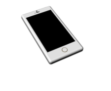
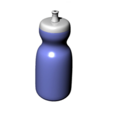

Rhino
This project was an assignment in Rhino. I had to measure and learn new tools in the Rhino software in order to model everyday objects
I modeled a water bottle, a chair, a pen, a light, and an iphone. This project allowed me to do research and watch instructional videos in additon to the in class lectures. It was fascinating discovering all the tools and opportunities Rhino possessed with modeling and rendering.

Street view of the subdivision

Aerial view of the subdivision
Aerial view of the subdivision

Aerial view of the subdivision